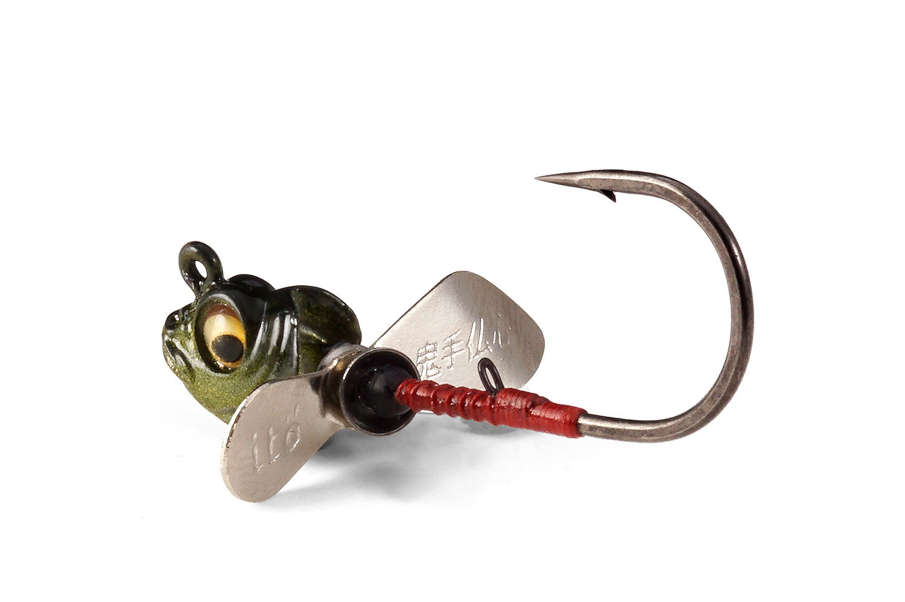
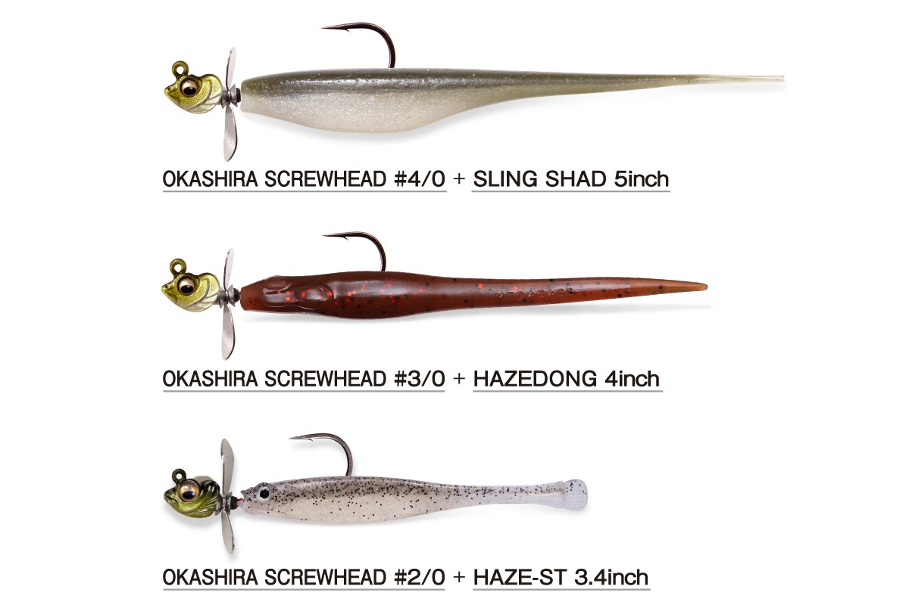
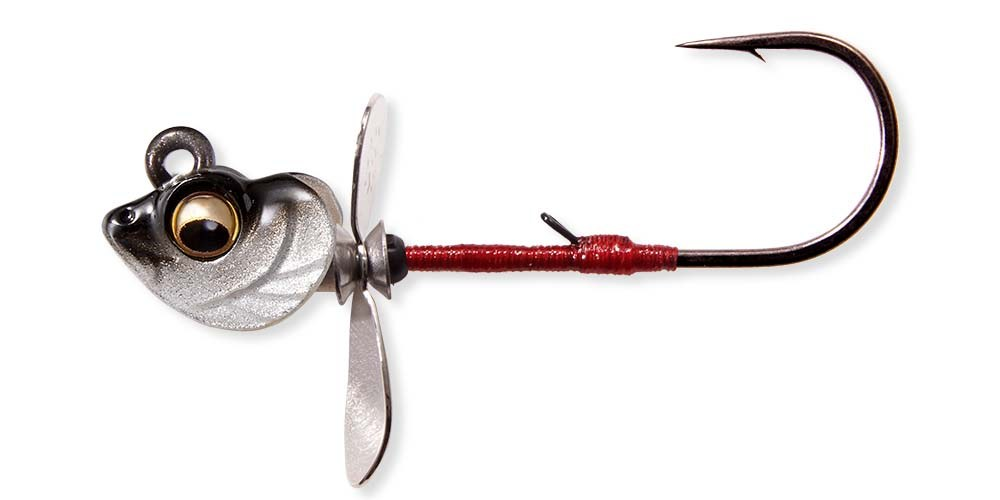
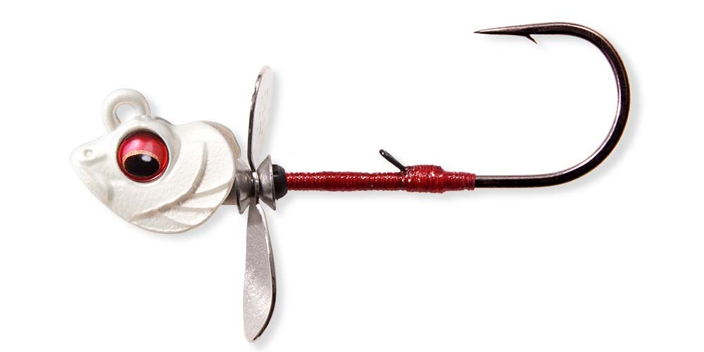
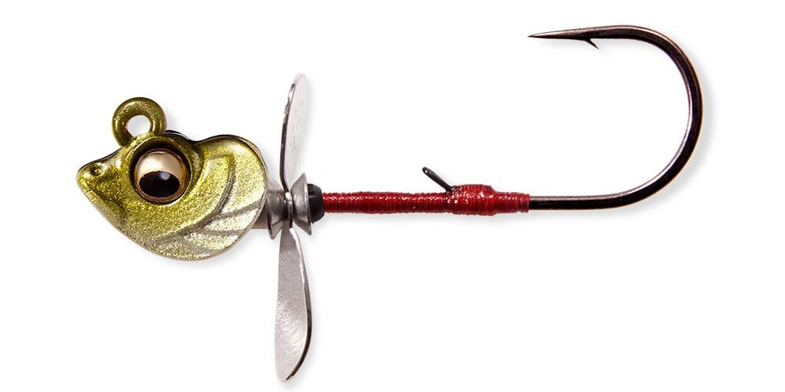
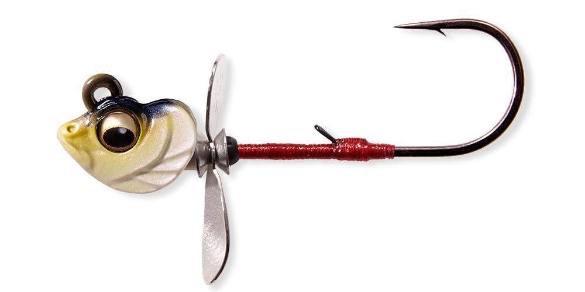
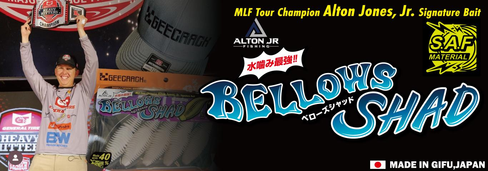

オカシラ・スクリューヘッド
（OKASHIRA SCREWHEAD）
オカシラ・スクリューヘッドは、メガバスのバス用ジグヘッド「オカシラヘッド」に、プロップ（ペラ）を付けたモデルです。
メガバスUSAのプロチームが一推しし、アメリカのトーナメントのタフな状況を打開してきたジグヘッドで、デッドスローで巻いても、落としても、プロップが微波動とフラッシングを出してバイトを生み出すのが最大の特徴です。

画像出典:Megabass公式HP
スペック
- メーカー
- Megabass（メガバス）
- タイプ
- ジグヘッド（プロップ付きフィッシュヘッドジグ）
- フック
- #2/0・#3/0・#4/0
- 重さ
- 1/16oz・1/8oz・3/16oz・1/4oz（約1.8〜7g。#2/0・#3/0・#4/0の各フック）
- プロップ
- ITOプロップ（ITO-Engineering製・左右非対称）
- 入数
- 3本入
- カラー
- 全4色
- ターゲット
- ブラックバス
- 価格
- メーカー希望小売価格（税別）#2/0：1,360円／#3/0：1,380円／#4/0：1,400円
- 発売
- 2026年
▼今すぐチェック


オカシラ・スクリューヘッドの特徴
中層のバスをフィーディングモードに変える、マジカルなジグヘッド
-
左右非対称のITOプロップ
翼の形が左右で違うITOプロップ（ITO-Engineering製）を搭載。デッドスローで巻いたときやフォール中に、不規則な微波動とフラッシングを出して、バイトのチャンスを作る。
-
プロップがよく回るウォータースルーレーン
アゴの下のウォータースルーレーンが水の流れを整え、プロップのスムーズな回転と、適切なスイム姿勢、レンジキープを支えている。
-
中層にサスペンドするバスに効く
中層に浮いて食い気のないバスを、エサを追うモードに変えてしまう。メガバスUSAプロチームが、アメリカのトーナメントのタフな状況で実績を重ねている。
オカシラ・スクリューヘッドの使い方
シャッドテールやストレートワームを付けて、プロップが回るぎりぎりのデッドスローで、中層を一定の速さで巻くのが基本です。
巻くのを止めてフォールさせても、プロップが回ってフラッシングを出すので、巻きとフォールを組み合わせて中層をじっくり探りましょう。

ワームの装着例（上から#4/0＋スリングシャッド5インチ、#3/0＋ハゼドン4インチ、#2/0＋ハゼST 3.4インチ）。
画像出典:Megabass公式HP
オカシラ・スクリューヘッドの得意な状況
夏や冬など、バスが中層にサスペンドして動かず、ふつうのルアーに反応しないタフな状況で出番です。
ワームだけでは弱いアピールを、プロップの微波動とフラッシングで足せるので、ほかのルアーで反応がない時の切り札としてボックスに入れておくと、釣れる1尾につながります。
ワンポイント
プロップが回る速さはワームの抵抗で変わります。最初に足元で泳がせて、プロップが回りはじめる一番遅いスピードを確かめてから投げると、デッドスローのレンジキープがしやすくなります。
オカシラシリーズの違い
| モデル | 特徴 | 価格 |
|---|---|---|
| オカシラヘッド | デルタ形状の |
#2/ #3/ #4/ |
| オカシラ・ |
左右非対称の |
#2/ #3/ #4/ |
どちらもフックは#2/0・#3/0・#4/0、重さは1/16〜1/4oz、カラーは同じ4色です（Megabass公式HPの記載より）。プロップの波動とフラッシングでアピールしたいならスクリューヘッド、シェイクやフォールでワーム自体の動きを生かすならオカシラヘッドを選びましょう。
人気カラー
オカシラ・スクリューヘッドの人気カラーを紹介します。

リアルミノー黒い背にシルバーの、小魚そのもののカラー。クリアウォーターでナチュラルに見せたい時に。

スポーンキル白いヘッドに赤い目。濁りの日や、目立たせてリアクションで食わせたい時に。

ウィードカモオリーブ系のヘッド。ウィードや岩などのカバー周りになじませたい時に。

テネシーシャッドグレーにイエローのシャッド系。ベイトフィッシュを意識したバスに。
画像出典:Megabass公式HP
▼今すぐチェック
オカシラ・スクリューヘッドに似ているルアー
-
 オカシラヘッド
メガバス
詳細はこちら＞
オカシラヘッド
メガバス
詳細はこちら＞
プロップの無い基本モデル。シェイクでヒラを打たせたい時に。
-

ベローズシャッド2.8 ジークラック 詳細はこちら＞シャッドテールのワーム。ジグヘッドに付けて中層を泳がせるなら。
-
 ダークスリーパー
メガバス
詳細はこちら＞
ダークスリーパー
メガバス
詳細はこちら＞
ボトム付近を泳がせるスイムベイト。もっと深いレンジを探るなら。